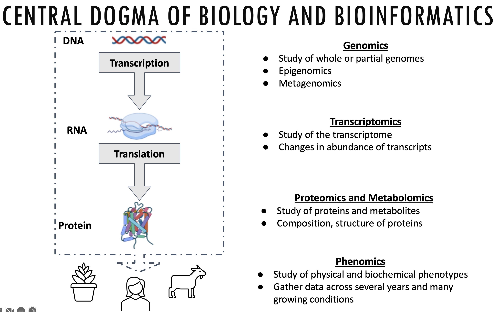
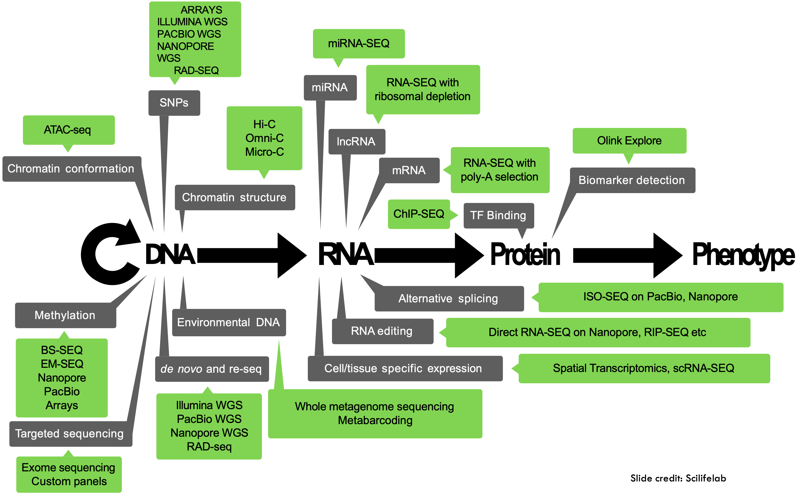
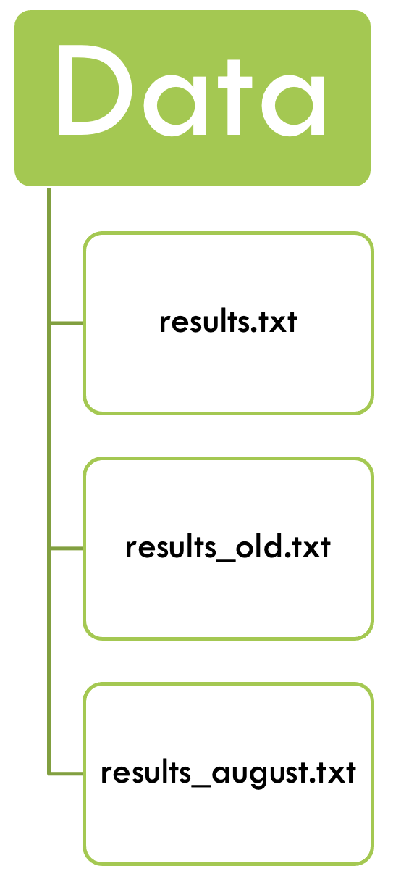

Data Management for Reproducible Research
Data Life Cycle
When working with any type of data, it makes sense to sit down before the project starts to think through the different life stages of the data in your project. This will help counteract some of the problems that can arise when projects grow more organically, and will help consistency within the research group, ease of collaboration, and mostly your future self that will understand what past-self has been up to in the project.
More and more funding agencies expect a Data Management Plan at some point of a project application. In there, you need to document that you have thought of, and planned for, the life cycle of your data.
FAIR principles
In the past, research data was often generated with one question in mind. Often, they would afterwards land in some drawer and be forgoten about. Nowadays researchers acknowledge that data can also be re-used, or combined with other data, to answer different questions.
The FAIR principles promote efficient data discovery and reuse by providing guidelines to make digital resources:
FAIR principles, in turn, rely on good data management practices in all phases of research:
- Research documentation
- Data organisation
- Information security
- Ethics and legislation
Reproducible research
Lucky for us, once we implement good data management practices, we will also increase the reproducibility of our analyses. Extensive documentation will increase faith in the outcome of analyses, and will help people (again, future-you) understand what has been done.
Last, but not least, reproducible research practices make project hand-overs smoother, when the next person already understands the structure of the project, and can rely on good documentation.
What data do we work with?
Bioinformatics is an interdisciplinary field of science that develops methods and software tools for understanding biological data, especially when the data sets are large and complex. (Wikipedia)
This data can come from a variety of different biological processes:

Early on, sequencing data was not readily available, but due to decreasing costs and increased computational power biological data is now being produced in ever increasing quantities:
At the same time, new technologies are being developed, and new tools that might or might not be maintained or benchmarked against existing tools. It’s the wild west out there!

Ways to work on data
The solution is to approach bioinformatics as a bioinformatician does: try stuff, and assess the results. In this way, bioinformatics is just about having the skills to experiment with data using a computer and understanding your results. source: Vince Buffalo
This is a traditional way to work with bioinformatics data, and can still have its merits. However, in this course we would like to introduce you to a more structured way to make sense of your data.
Let’s have a look at how a beginning PhD student might approach their data:
- They might analyse their data, and get some results.
- After talking with their supervisor they might get a few other samples from a collaborator, or need to drop them from the analyses due to quality concerns.
- They run the analyses again and get a different set of results.
- There might be a few iterations of this process, and then the reviewers require some additional analyses…
In the “end” we have something like this:

- There is a folder for the raw data, which does not get altered.
- Code is kept separate from data.
- Use a version control system (at least for code) – e.g. git.
- There should be a README in every directory, describing the purpose of the directory and its contents.
- Use file naming schemes that makes it easy to find files and understand what they are (for humans and machines) and document them.
- Use non-proprietary formats – .csv rather than .xlsx
Literate programming
Our hypothetical PhD student, even if taking into account the best practice tips from above, is still likely to run the same analyses over and over whenever the input data changes. Sometimes, this might be months, or even years, after the original analysis was performed.
Luckily for our student, they can save their code snippets (with intuitive file names) and re-use the code from back then. This is often done with R-scripts, but can just as well be applied to bash scripts, python scripts etc.
Code should be readable, broken down into small contained components (modular), and reusable (so you’re not rewriting code to do the same tasks over and over again). These practices are crucial in the software world, and should be applied in your bio‐ informatics work as well.
In contrast to code, data should be formatted in a way that facilitates computer read‐ ability. All too often, we as humans record data in a way that maximizes its readability to us, but takes a considerable amount of cleaning and tidying before it can be pro‐ cessed by a computer. The more data (and metadata) that is computer readable, the more we can leverage our computers to work with this data.
In the past years, the development went even further and one can even combine code and documentation in the same document. The code is wrapped in so called chunks, that are executable from within the document.
These notebooks come in different flavors, for example jupyter notebooksand marimo for Python applications, Rmarkdown for R code. Its successor, quarto can be used to integrate a variety of coding languanges. In this course, we will introduce you to quarto.
Writing scripts to produce images and tables may seem like a more time-consuming process than generating these interactively in Excel or R. However, if you’ve ever had to regenerate multiple figures by hand after changing an earlier step, you know the merit of this approach. Scripts that generate tables and images can easily be rerun, save you time, and lead your research to be more reproducible.
Hands-on: quarto
With this, we can turn to the quarto hands-on training to learn more about quarto and its capabilities.
Version control
Now that our student has reproducible documents, with reasonable names, that can execute their analyses reliably over and over again, what happens if they modify their analyses? Will they end up again with different result files and their project sink down in chaos?
No, because there is version control, the practice of tracking and managing changes to files.
Version control can be used on the local system, where both the version database and the checked out file - the one that is actively being worked on - are on the local computer. Good, but the local computer can be corrupted and then the data is compromised.

Version control can also be centralized, where the version database is on a central server, and the active file can be checked out from several different computers. This is useful when working from different systems, or when working with collaborators. However, when the central servers is compromised the historical version are lost.

At last, version control can be fully distributed, with all versions of the file being on the server and different computers. Each computer checks out the file from its own version database to work on them. The databases are then synchronized between the different computers and the server. One such distributed version control system is git. It can handle everything from small to very large projects and is simple to use. GitHubis a code hosting platform for version control and collaboration, built on git.

Distributed version control facilitates collaboration with others. Software like git automatically tracks differences in files, and flags conflicts between files.
Additionally, GitHub, the code hosting platform based on git that we are using in this course, can be used to maintain uniformity within a working group. The group can develop their own project template that people can use and populate for their own projects.
Hands-on: git and github
We have prepared a hands-on training for git and GitHub for you.
Environment managers
Using git, our PhD student can now share their reproducible code with their colloaborators, or between systems. They can rest assured that the different versions of the notebook are tracked and can be checked out when necessary. But what about the bioinformatic tools?
Different computers can run on different operating systems, or can have different versions of databases installed. This can lead to conflicts between tools, or software versions and can impact code usability, or reproducibility.
Fortunately, smart people have developed environment managers such as conda, bioconda, or pixi. These tools find and install packages, so that the same package versions are being run between different computers. However, the code might still give different results on different operating systems.
Hands-on: managing environments with pixi
Here is a link to our introduction to pixi.
Containers in bioinformatics
But what if our PhD student needs to run their code on different operating systems?
They can use containers, that contain everything needed to run the application, even the operating system. Containers are being exchanged as container images, which makes them lightweight. Containers do not change over time, so the results will be the same today and in a few years. Everyone gets the same container that works in the same way.
Hands-on: containers
Here is our tutorial on where to get container images, and how to use - and even build your own - containers.
Workflow manager - Nextflow
Now our PhD student can use containers, or environments, to provide a uniform environment for their version controlled, wonderfully documented and reproducible code. Fantastic! But they still have to deploy, or at least monitor, their scripts manually.
Fortunately there are workflow managers that can integrate all of the above, submit your jobs for you, and even monitor and re-submit scripts after failure. They will automatically submit jobs for you, decreasing downtime and increasing efficiency.
Humans doing rote activities tend to make many mistakes. One of the easiest ways to make your work more robust is to have your computer do as much of this rote work as possible. This approach of automating tasks is more robust because it decreases the odds you’ll make a trivial mistake such as accidentally omitting a file or naming out‐ put incorrectly.
Hands-on: Nextflow
Follow this link for a more detailed introduction to nextflow.
Things to take home
We have now talked about many different aspects of data management, and tools and guidelines to make your life, and managing a research group, easier. Instilling best practices on students early on in their life will mean that routines will become second nature. We believen that making projects more FAIR and reproducible might initially take a bit more time, but will ultimately boost productivity.
If you cannot implement all of the above, choose some things that you can implement this time, and aim to implement another aspect the next time.